Routing Guide
El siguiente código es un ejemplo de una ruta muy básica.
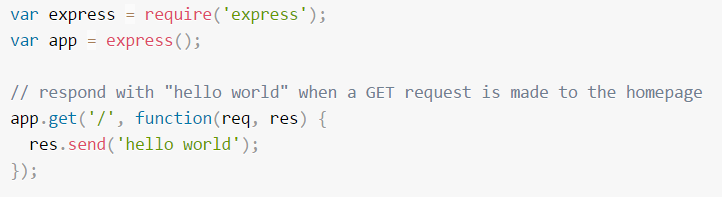
Métodos de ruta
El siguiente código es un ejemplo de la ruta que se definen para el método GET a la raíz de la aplicación.
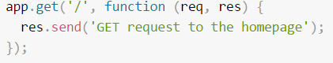
Express da soporte a los siguientes métodos: get, post, put, head, delete, options, trace, copy, lock, mkcol, move, purge, propfind, proppatch, unlock, report, mkactivity, checkout, merge, m-search, notify, subscribe, unsubscribe, patch, search y connect.
Hay un método de direccionamiento especial, app.all(), que no se deriva de ningún método HTTP. Este método se utiliza para cargar funciones de middleware en una vía de acceso para todos los métodos de solicitud.
Ejemplo:
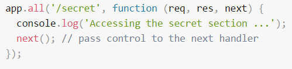
Vías de acceso de ruta
Las vías de acceso de ruta, en combinación con un método de solicitud, definen los puntos finales en los que pueden realizarse las solicitudes. Las vías de acceso de ruta pueden ser series, patrones de serie o expresiones regulares.
Ejemplo de vías de acceso de ruta basadas en series:
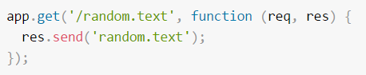
Ejemplo de vías de acceso de ruta basadas en patrones de series:
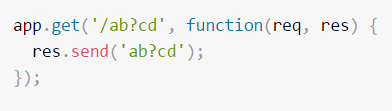
Ejemplo de de vías de acceso de ruta basadas en expresiones regulares:
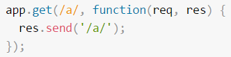
Manejadores de rutas
Puede proporcionar varias funciones de devolución de llamada que se comportan como
para manejar una solicitud. La única excepción es que estas devoluciones de llamada pueden invocar next('route') para omitir el resto de las devoluciones de llamada de ruta. Puede utilizar este mecanismo para imponer condiciones previas en una ruta y, a continuación, pasar el control a las rutas posteriores si no hay motivo para continuar con la ruta actual.
Ejemplo:
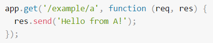
Más de una función de devolución de llamada puede manejar una ruta (asegúrese de especificar el objeto next). Por ejemplo:
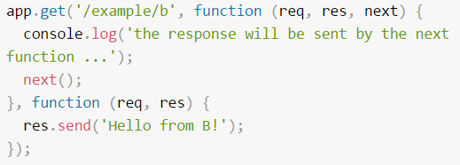
Una matriz de funciones de devolución de llamada puede manejar una ruta. Por ejemplo:
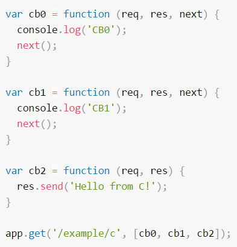
Métodos de respuesta
Los métodos en el objeto de respuesta (res) de la tabla siguiente pueden enviar una respuesta al cliente y terminar el ciclo de solicitud/respuestas. Si ninguno de estos métodos se invoca desde un manejador de rutas, la solicitud de cliente se dejará colgada.
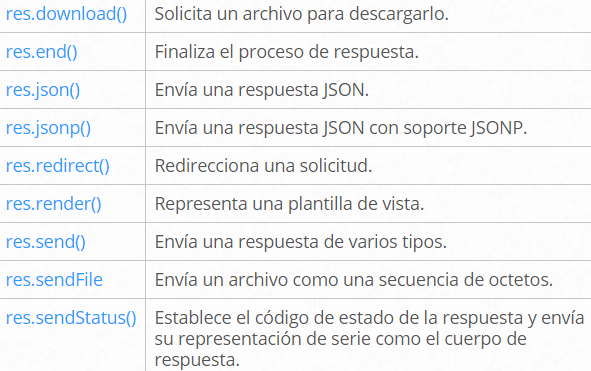
app.route()
Puede crear manejadores de rutas encadenables para una vía de acceso de ruta utilizando app.route().
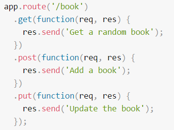
express.Router
Utilice la clase express.Router para crear manejadores de rutas montables y modulares. Una instancia Router es un sistema de middleware y direccionamiento completo.
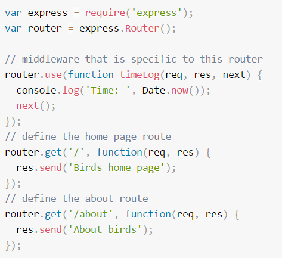